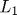
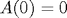

CFH Toolbox
This toolbox implements the Fourier transform methods approach to option pricing of Duffie/Pan/Singleton (DPS2000). Using this toolbox, you can recover option prices, bond prices, CDS spreads, probability density functions and much more for the whole class of affine jump-diffusion (AJD) models and for any user supplied characteristic function. This toolbox draws from the FFT methods of Carr/Madan (CM1999) and Chourdakis (C2005).
Author: matthias.held@web.de
Contents
- Available functions
- Introduction
- AJD processes
- The Transform Function: AJD process to characteristic function
- The Transform Inversion: Characteristic function to conditional expectations
- The Extended Transform Function: AJD process to extended characteristic function
- The Extended Transform Inversion: Extended Characteristic function to conditional expectations
Available functions
Each function of this toolbox comes with an array of examples highlighting its capabilities and possible applications.
- cf2american Compute American type options for Lévy return dynamics
- cf2bond Compute bond prices from AJD dynamics
- cf2bondEx Compute extended bond pricing transforms from AJD process
- cf2call Estimate call option prices from characteristic function
- cf2gaby Compute conditional expectations from characteristic function
- cf2pdf Compute probability density function from characteristic function
- cf2spread Compute spread option prices from characteristic function
- cfaffine Yields a characteristic function for a given set of Affine-Jump-Diffusion (AJD) dynamics
- cfaffineEx Yields the extended characteristic function for a given set of Affine-Jump-Diffusion (AJD) dynamics
- cfjump A library of commonly encountered jump transforms and their gradients
- cflib A library of commonly encountered characteristic functions
- cfneutralize Returns the risk-neutralized drift components for asset prices from given AJD dynamics coefficients
Introduction
This toolbox allows its user to solve a large array of problems commonly encountered in computational finance. Given the knowledge of either the characteristic function of an option pricing problem or the design of an AJD process, you may recover bond and CDS prices, European and Asian option prices, probability density functions and conditional expectations (prices for certain payoff functions). All functions in this toolbox are kept as modular as possible so that you have the least level of fuss.
This toolbox is work-in-progress. For updates, or if you are interested in collaboration, you may
- check the toolbox' Mathworks page on a regular basis for updates
- check my Github page for collaboration
- send me an e-mail for discussion/feedback
The remainder of this document gives a quick summary of the DPS2000 paper, i.e. the setup of AJD processes, the transform functions and its inverse and the extended transform function and its inverse.
AJD processes
Let be an N-dimensional affine jump-diffusion process

Affine means that the process parameters (drift, variance, jump intensity) and the discount factor are affine in the state variables:
- drift:
 , where is an Nx1 vector and is an NxN array
, where is an Nx1 vector and is an NxN array - variance: , where is an NxN array and is an NxNxN tensor (an ND-array in Matlab)
- interest rate process: , where is a scalar and is an Nx1 array
- jump intensity of : , where is a scalar and  is an Nx1 array
- jump transform: , maps from the N dimensional input to a scalar output. is the moment generating function of the jump distribution of
The function cfjump offers a library of commonly encountered jump transforms, whereas cfneutralize allows you to risk neutralize the asset processes in your model so that the asset price components of are martingales.
The Transform Function: AJD process to characteristic function
For the class of AJD processes, the discounted risk neutral expectation

can be computed as
 ,
,
where and solve the Ricatti equations:
subject to the condition and  .
.
Given knowledge of , we can obtain option prices,bond prices, and cumulative or probability density functions, amongst others.
For any feasible AJD process, the function cfaffine recovers this transform function for  replaced by , i.e. it computes the characteristic function. The function cf2bond directly evaluates the transform function at
replaced by , i.e. it computes the characteristic function. The function cf2bond directly evaluates the transform function at  , thereby efficiently recovering bond prices and yields for different maturities. The function cflib offers a library of commonly encountered characteristic functions in finance. The function cf2pdf recovers the probability density that corresponds to any characteristic function.
, thereby efficiently recovering bond prices and yields for different maturities. The function cflib offers a library of commonly encountered characteristic functions in finance. The function cf2pdf recovers the probability density that corresponds to any characteristic function.
The Transform Inversion: Characteristic function to conditional expectations
DPs further introduce the discounted conditional expectation
and show that its Fourier transform (as a function of ) is
Consequently, the discounted conditional expectation can be recovered by invoking Gil-Pelaez:
The function cf2gaby recovers this expectation for any characteristic function. For standard (call) option pricing applications, cf2call directly evaluates the characteristic function and obtains the corresponding call option price in one go.
The Extended Transform Function: AJD process to extended characteristic function
Further, from DPS we are able to recover the extended transform function
as
where is the solution to the transform function above, and where and solve the linear ODEs:
subject to the condition  and .
For any feasible AJD process, the function cfaffineEx recovers this transform function for arbitrary and replaced by , i.e. it yields the extended characteristic function of .% cf2bondEx evaluates the extended transform at and arbitrary , thus directly recovering risk neutral expectations of linear combinations of process variables. The function cfjump offers a library of commonly encountered jump transforms and corresponding gradient functions  required by the extended transform.
required by the extended transform.
The Extended Transform Inversion: Extended Characteristic function to conditional expectations
From DPS2000, we can further recover the extended conditional expectation via Fourier inversion. Let
The corresponding extended transform is
Consequently, the discounted conditional expectation can be recovered by invoking Gil-Pelaez:
The function cf2gaby recovers this expectation for any extended characteristic function.